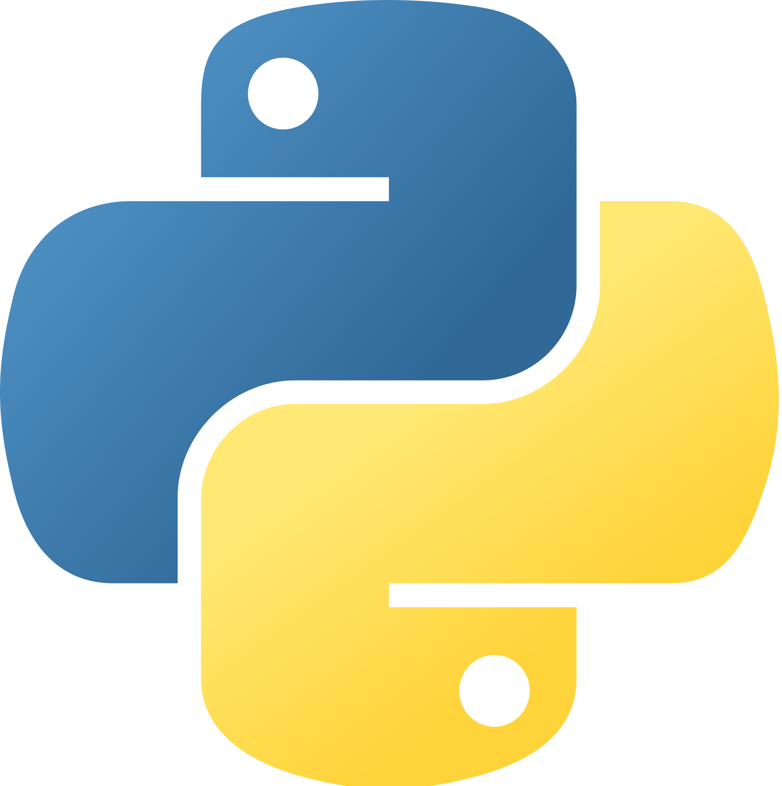

Olá a todos! Gostaria de compartilhar um pouco sobre mim. Meu nome é Sivanildo Oliveira de Souza e tenho 28 anos. Atualmente, sou estudante de Análise e Desenvolvimento de Software, cursando o 2º período. Desde muito jovem, sempre fui apaixonado por tecnologia e tudo o que ela pode oferecer. Minha jornada acadêmica tem sido uma experiência incrível, permitindo-me explorar diferentes conceitos e ferramentas no campo da análise e desenvolvimento de software. Estou constantemente aprimorando minhas habilidades técnicas e buscando conhecimento em áreas como programação, estrutura de dados e engenharia de software. Acredito que a tecnologia é uma ferramenta poderosa para impulsionar mudanças e criar soluções inovadoras. Além disso, tenho conhecimentos na área de design gráfico. Durante minha trajetória, adquiri conhecimentos nessa área, compreendendo a importância de uma boa comunicação visual e o impacto que isso pode ter em produtos e serviços. Essa combinação de habilidades em análise e desenvolvimento de software, juntamente com o conhecimento em design gráfico, permite-me abordar projetos de forma abrangente e multidisciplinar. Atualmente, estou em busca da minha primeira oportunidade profissional na área de tecnologia. Estou ansioso para aplicar meus conhecimentos e contribuir de forma significativa em projetos desafiadores. Tenho uma mente curiosa e estou sempre disposto a aprender e crescer profissionalmente. Agradeço a oportunidade de compartilhar um pouco sobre mim. Estou entusiasmado com as possibilidades que o futuro reserva na área de tecnologia. Se você tiver alguma oportunidade ou projeto interessante, adoraria conversar mais sobre como posso contribuir. Obrigado!
Desenvolvedor
Full Stack
Bem-vindo(a) ao meu portfólio!
É um prazer recebê-lo(a) neste espaço onde compartilho minha jornada profissional e acadêmica. Aqui, você encontrará informações sobre meus projetos, formações acadêmicas e um pouco mais sobre mim.
Ao explorar meu portfólio, você terá acesso aos detalhes dos projetos que venho desenvolvendo, refletindo minha paixão e comprometimento com a excelência. Cada projeto é único, representando minha dedicação em encontrar soluções criativas e inovadoras.
Visite meu github
Quem sou eu?
Meus conhecimentos:
integration_instructions
Desenvolvimento WEB
Desenvolvimento web é o processo de criação e manutenção de sites e aplicativos acessíveis através da internet. Ele engloba uma série de tecnologias, linguagens de programação e frameworks que permitem a construção de interfaces interativas, funcionais e visualmente atraentes.
phone_iphone
Desenvolvimento Mobile
Desenvolvimento mobile refere-se à criação de aplicativos móveis para dispositivos como smartphones e tablets. Com o crescente uso desses dispositivos e a popularidade das lojas de aplicativos, o desenvolvimento mobile se tornou uma área essencial e altamente procurada no campo da tecnologia.
computer
Sistemas WEB/Descktop
O desenvolvimento de sistemas é o processo de criação de software personalizado para atender às necessidades específicas de uma organização ou usuário. Esses sistemas podem ser aplicativos de negócios, sistemas de gerenciamento de dados, sistemas de automação, sistemas embarcados e muitos outros.
analytics
Agoritimos para Processamento de dados
O desenvolvimento de algoritmos de processamento de dados é uma parte fundamental da ciência da computação e da análise de dados. Os algoritmos são conjuntos de instruções lógicas e matemáticas que permitem realizar operações e manipulações nos dados de forma eficiente e precisa.
view_quilt
WEB designer
Se concentra na criação de interfaces gráficas atraentes, funcionais e intuitivas para websites. Os web designers combinam elementos visuais, como layout, cores, tipografia e imagens, com princípios de usabilidade e experiência do usuário para criar sites eficazes e envolventes.
architecture
Designer gráfico
envolve a criação visual de elementos de comunicação, como logotipos, banners, cartazes, materiais impressos, embalagens, interfaces de aplicativos, entre outros. Os designers gráficos utilizam sua criatividade e habilidades técnicas para transmitir mensagens de forma visualmente atraente e eficaz.
Tecnologias que utilizo

Python

HTML, CSS, JavaScript

Framework Kivy
Framework Flask

Photoshop
Corel Draw
Framework React Native